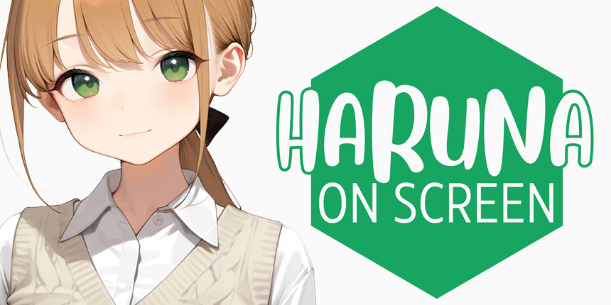

하루나 온 스크린
(Haruna on Screen)last updated: 2025-09-24
당신의 데스크탑에 머무는 AI 미소녀
컨셉: PC 바탕화면에 상주하며 사용자와 소통하는 AI 스크린메이트. 사용자와의 모든 대화를 기억하며, 페르소나 프롬프트 에디터로 성격과 기억을 편집할 수 있다. 캐릭터 3종, 의상 9종.
사용 기술: Electron, Python (Flask), Google Gemini API, HTML5, CSS3, JavaScript
스토어 페이지